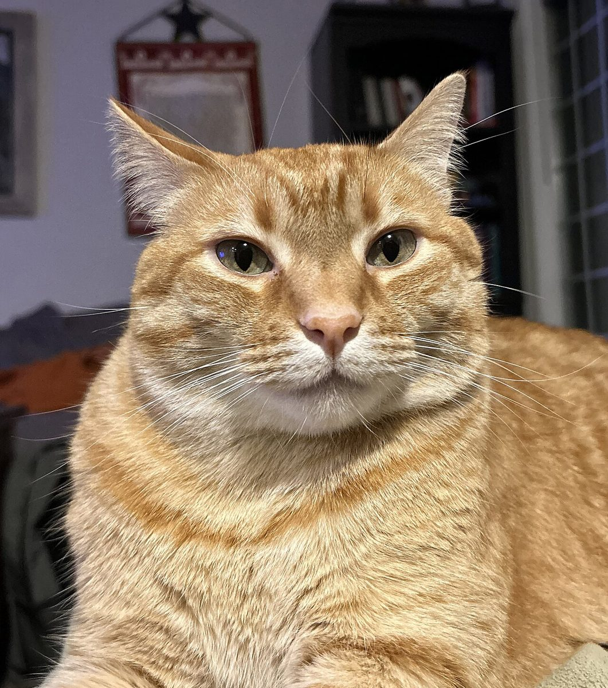
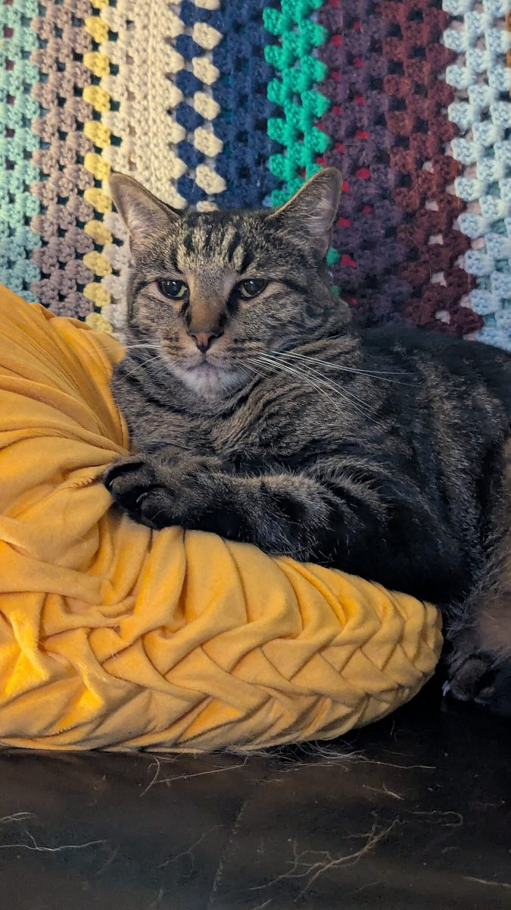
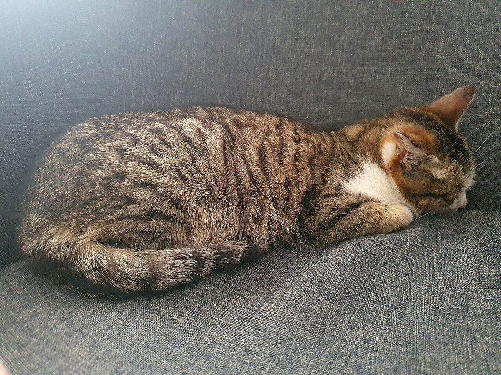
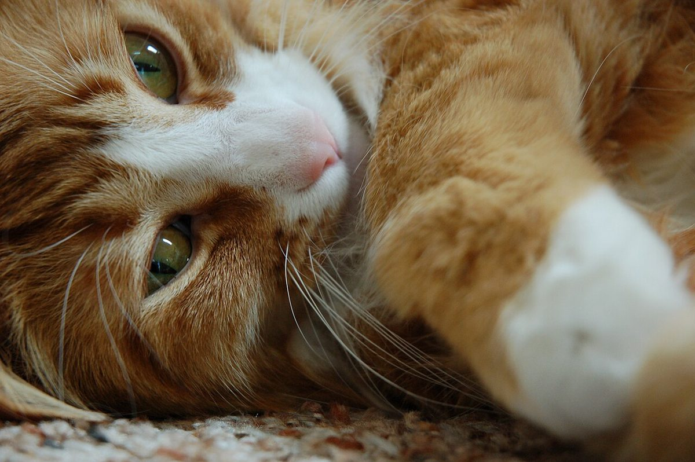

喫茶 / 猫雑貨
猫雑貨と喫茶Tabby
岩手県一関市にある、猫雑貨も扱う喫茶「猫雑貨と喫茶 Tabby」のご案内ページです。営業時間やメニューなど詳しいことは準備中。まずはInstagramをのぞいてみてください。

制作側の連想
「Tabby」から、縞柄の四つの型へ
店名の由来は分かりません。制作側は、英語の「Tabby」が縞柄の猫を指す言葉であることから、猫の毛柄の見本帖のような作りを思いつきました。毛柄には縞(しま)・渦(うず)・斑(まだら)・霜降りの型があるとされ、このサイトの各ページをその型にあてています。制作側の連想で、お店の理念・由来とは無関係です。
見本帖(イメージ)
四つの型、四枚のスワッチ。
写真はお店や一関市のものではなく、国外・撮影地不明のフリー素材です。
- 型1 渦円を描くように広がる模様

撮影地不明のイメージ - 型2 斑ぽつぽつと散る点
- 型3 縞縦に細く並ぶ線

国外のイメージ(ルーマニア) - 型4 霜降り一本ずつの毛が混ざる色

撮影地不明のイメージ
ご案内
お店のこと(確認できたものだけ)
| 所在地 | 〒021-0821 岩手県一関市三関神田２３−３ |
|---|---|
| 電話 | なし |
| 営業時間 | 準備中 |
| 定休日 | 準備中 |
| ご予約 | 準備中 |
| 駐車場 | 準備中 |
| SNS | Instagram @tora_nekocafe |